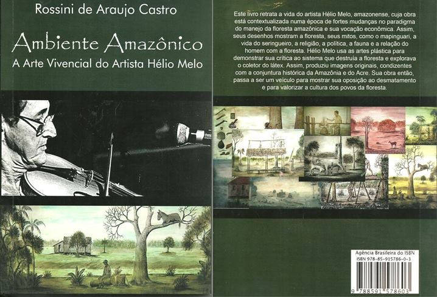

Livro "Ambiente Amazônico: A arte vivencial do artista Hélio Melo. Autor: Rossini de Araujo Castro

Figura 50 -Divulgação da web semana Hélio Melo que acontecerá nos dias 18, 19 e 20 de julho no Canal do youtube Quinta do Livro para homenagear os 94 anos do artista Hélio Melo.
Vídeo 5 -Vídeo ao vivo no canal do yotube Quinta do Livroocorrida no dia 02 de julho de 2020 ás 20:00 com o convidao Prof. Ms. Antônio Xavier de Queiroz sobre os artigos publicados no livro Diálogos Intersisciplinares, organizado pelo Prof. Dr. Norberto Stori.São Paulo-SP.
Vídeo 6 -Vídeo ao vivo no canal do yotube Quinta do Livro dia 09 de julho de 2020 ás 20:00 com as convidas Profa. Ms.(Doutoranda) Estela Pereira Batista e Profa.Dra. Hânia Cecília Pilan sobre os artigos publicados no livro Diálogos Intersisciplinares, organizado pelo Prof. Dr. Norberto Stori.São Paulo-SP.